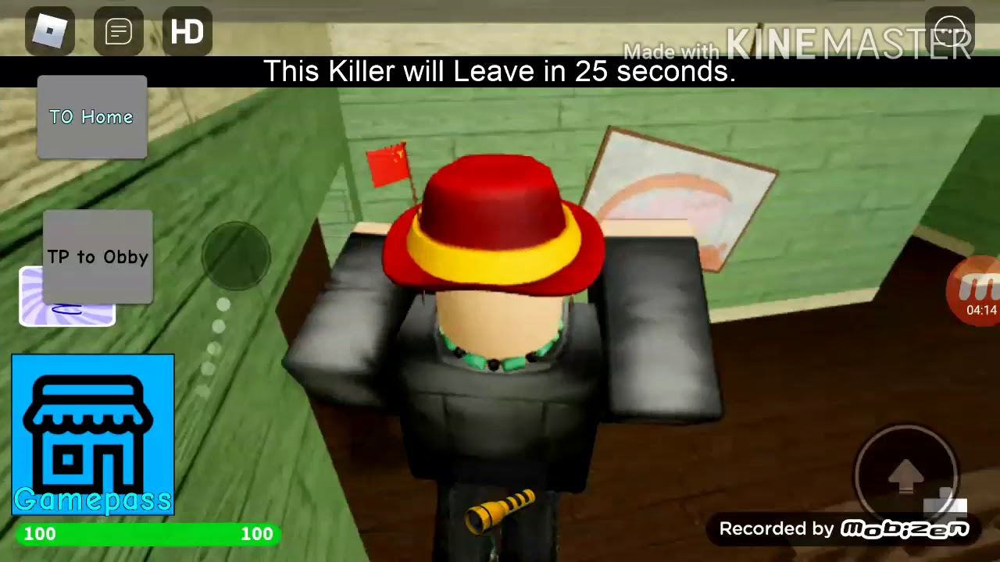
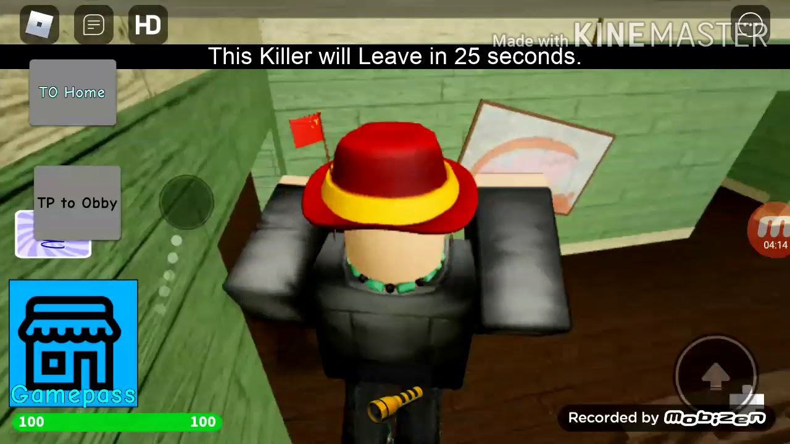

Nemokami žaidimai online - zaidimai24.eu
2020.10.29 09:51

× Žaidimai Highscore žaidimai Imitavimas Išradingumas žaidimai Lenktynių žaidimai Nuotykių žaidimai RPG žaidimai Sporto žaidimai Stalo žaidimai Vaikams žaidimai Veiksmo žaidimai TOP žaidimai zaidimai24.eu
Nemokami žaidimai online
Nuobodu? Ateik ir žaisti geriausias nemokamai žaidimai internete. Mes rasite platų žaidimai - vaikų žaidimai, Šaudymo žaidimai, kortų žaidimai, dėlionės, stalo žaidimai ir daug kitų internetinių žaidimų. Yra daugiau nei 4000 žaidimų!
Visi žaidimai TOP žaidimai
Highscore žaidimai 5 Imitavimas 338 Išradingumas žaidimai 860 Lenktynių žaidimai 307 Nuotykių žaidimai 1025 RPG žaidimai 222 Sporto žaidimai 387 Stalo žaidimai 127 Vaikams žaidimai 23 Veiksmo žaidimai 899TOP žaidimai
Fruits and Vegetables
Bubble Shooter
Dream Pet Link
Spider Solitaire
Shangai Dynasty
Car Logo Puzle
Gold Strike
Bejevell
Gem Mine
Fruit Legend Elimination
Lines
Popstar
Billiards
Mahjongg Alchemy
Mah Jongg
Go Go Goblin 2
Dolphin Pop
Kings Rush
Bubbles Game
Mind Your Marbles
Fruits and Vegetables 2
Defend Your Nuts
Snail Bob 5 Love Story
Solitare
Kita žaidimo
Flash Chess
Spider Solitaire
Dolphin Pop
Billiards
Mind Your Marbles
Mah Jongg
Bejevell
Popstar
Kings Rush
Elsa Magic Rescue
Goldminer
Solitare
Dream Pet Link
Lines
Defend Your Nuts
Angry Birds Ultimate Battle
Car Logo Puzle
Jewel Quest
Go Go Goblin 2
Gem Mine
2048
Snail Bob 5 Love Story
Bubble Shooter
Bubbles Game
Kartu su mumis
Tweets by @zaidimai24Nemokami žaidimai
Sveiki atvykę į zaidimai24.eu, pirmaujanti interneto žaidimai svetainę, kur galite žaisti daugybę nemokamus internetinius žaidimus, įskaitant veiksmų žaidimai, sporto žaidimai, puzzle žaidimai, žaidimai mergaitėms, žaidimai vaikams, žaidimai ir daug daugiau.
Online žaidimai
Internetinis žaidimas yra video žaidimas, žaidžiamas per kai kompiuterių tinklo forma, naudojant asmeninį kompiuterį, vaizdo žaidimų konsolės ar delninis žaidimų konsolės.Interneto azartinių lošimų plėtra atspindi bendrą plėtros kompiuterinius tinklus iš mažų vietinių tinklų prie interneto ir interneto prieigos pati augimą. Online žaidimai gali svyruoti nuo paprasto teksto pagrindu aplinkoje su žaidimais, kuriuose sudėtingus grafika ir virtualių pasaulių, kuriame gyvena daug žaidėjų vienu metu. Daugelis internetinių žaidimų susijęs internetinių bendruomenių, todėl žaidimai socialinės veiklos formos ne tik vieno žaidėjo žaidimų. Retro ar klasikinių interneto žaidimai leis tiek suaugusiems ir vaikas žviegimas iš džiaugsmo ir jie mėgsta žaisti juos vėl ir vėl. Tuo žaidimai 24 rasite gražus atrankos sporto žaidimai, pavyzdžiui, baseinas, futbolo ar golfą. Pažvelkite Multiplayer žaidimai skyriuje išvaizdą žaisti žaidimus su draugais ir kalbėtis. Mūsų katalogas yra visiškai suderinti su įdomus ir kietas žaidimų. Pasukti ryškiausią protus mes turime keletą dėlionės ir platforma žaidimus, pakelsiu savo žvalgybos jos ribos. Jei manote, kad jums buvo tikėtina, kandidatas Grand Prix, pabandykite savo rankas deginimas juostomis su lenktynių ir vairavimo žaidimų, tokių kaip 3D Racing. Kai kurie iš populiariausių naikintuvų žaidimai yra tie, kurie teminius ant karatė ir bokso. Tai beat em up žaidimai leis vaikams žviegimas iš džiaugsmo, ir kad suaugusiųjų kovoti su dėl to veiksmo gabalas vaikams. Tuo zaidimai24.eu jūs galite žaisti tūkstančius nemokamų žaidimų, pavyzdžiui, veiksmo žaidimai, ir jie bus pripumpuoti savo adrenalino, o tu žaidi cool naršyklės pagrindu žaidimai. Laiko žaisti įdomius žaidimus!
© zaidimai24.eu 2014 - 2020. Visos teisės saugomos.
Spēles Mängud Žaidimai
- Nemokami žaidimai online - Freegames.lt
- Loginiai Žaidimai - Žaidimai - Zaidziu.lt
- Žaidimai, nemokami online žaidimai - 321zaidimai.lt
- Sporto žaidimai
- Nemokami žaidimai online | Draugas.lt
- Įvairūs žaidimai: - pradinukas's JimdoPage!
- Loginiai žaidimai - Žaidimai, nemokami online žaidimai ...
- Suaugusiems žaidimai: internetu, nemokami - Freegames.lt
- Populiariausi online žaidimai | Draugas.lt
- Judrieji žaidimai: - pradinukas's JimdoPage!
- Nemokami žaidimai online - Freegames.lt
Populiariausi online žaidimai - populiariausi nemokami flash žaidimai internete vaikams ir suaugusiems. Žaisk populiariausius online žaidimus nemokamai!
- Loginiai Žaidimai - Žaidimai - Zaidziu.lt
Žaidimai, nemokami žaidimai, online žaidimai. Groti geriausia nemokamus online žaidimus bent 321zaidimai.lt - didžiausias šaltinis žaidimai, siūlanti daugiau nei 2000 įdomių online žaidimus žaisti nemokamai.
- Žaidimai, nemokami online žaidimai - 321zaidimai.lt
Populiariausia nemokamų online žaidimų svetainė Lietuvoje! Žaidimai net ir išrankiausiam skoniui, nuo loginių iki šaudyklių, nuo skirtų mažiausiems iki pažymėtų raide S.
- Sporto žaidimai
Žaidimai yra kuriami laisvu laiku, po dienos darbų, tad naujo žaidimo kūrimas gali trukti nuo savaitės iki kelių mėnesių. Ką daryti, jei pastebėjau klaidą? Susisiekite per Facebook puslapį Gudrutis Dutis su administratoriumi ir papasakokite kas nutiko. Jei pridėsite ekrano kopiją (ang. screenshot), tai padėtų labiau suprasti ...
- Nemokami žaidimai online | Draugas.lt
Akla karvė Visi žaidėjai susėda ratu. Vienam žaidėjui užrišamos akys - jis yra "akla karvė". Tada tas žaidėjas kelis kartus apsukamas aplink ir pastatomas rato viduryje. Žaidėjai sunčia varpelį ratu ir skambina. "Akla karvė" turi sekti varpelio skambėjimą. Kai vadovas duoda ženklą, varpelį turintis žaidėjas nustoja juo skambinti ir nebeperduoda jo toliau.
- Įvairūs žaidimai: - pradinukas's JimdoPage!
Loginiai žaidimai Surinkome daugiau kaip tūkstantį loginių žaidimų, taktinių dėlionių ir mąstymo žaidimų, kurie leis jūsų smegenims treniruotis visiškai nemokamai. Tai saugi vieta ir smagus būdas vaikams tyrinėti ir ieškoti loginio problemų sprendimo internete, lavinti loginio mąstymo įgūdžius.
- Loginiai žaidimai - Žaidimai, nemokami online žaidimai ...
Mėgstantiems skaičiuoti: 1 klasė Aritmetika-maziausiems Skaičių miestelis. Išgelbėk princesę. Suskaičiuok batukus Varlytė Padėk Undinėlei suskaičiuoti 2 klasė Testas Pinigėnai Mumija Linksma mumija Linksma mumija 2 Supervėžliukai Daug žaidimų matematikai Žaidimas X ir 0 (kryžiukai ir nuliukai) 3 - 4 klasė Įdomioji statistika Žaisk ir mokykis daugybos lentelę Testas.
- Suaugusiems žaidimai: internetu, nemokami - Freegames.lt
Loginiai žaidimai – Puzzle games, nemokami Strateginiai žaidimai, Mahjong žaidimai, naikink Burbulus, Zuma pramogos, žaidimai vaikams, strateginiai žaidimai, surask paslėptus daiktus, žaidimai, kuriuose reikia sunaikinti kaladėles. Šie žaidimai yra populiariausi ir naujausi Europoje.
- Populiariausi online žaidimai | Draugas.lt
Nemokami žaidimai Sveiki atvykę į 321zaidimai.lt, pirmaujanti interneto žaidimai svetainę, kur galite žaisti daugybę nemokamus internetinius žaidimus, įskaitant veiksmų žaidimai, sporto žaidimai, puzzle žaidimai, žaidimai mergaitėms, žaidimai vaikams, žaidimai ir daug daugiau.
- Judrieji žaidimai: - pradinukas's JimdoPage!
Edukaciniai žaidimai vaikams. Šis tinklalapis naudoja slapukus, jog užtikrinti geriausią įmanomą potyrį.
Populiariausi online žaidimai - populiariausi nemokami flash žaidimai internete vaikams ir suaugusiems. Žaisk populiariausius online žaidimus nemokamai!
Žaidimai, nemokami žaidimai, online žaidimai. Groti geriausia nemokamus online žaidimus bent 321zaidimai.lt - didžiausias šaltinis žaidimai, siūlanti daugiau nei 2000 įdomių online žaidimus žaisti nemokamai.
Populiariausia nemokamų online žaidimų svetainė Lietuvoje! Žaidimai net ir išrankiausiam skoniui, nuo loginių iki šaudyklių, nuo skirtų mažiausiems iki pažymėtų raide S.
Žaidimai yra kuriami laisvu laiku, po dienos darbų, tad naujo žaidimo kūrimas gali trukti nuo savaitės iki kelių mėnesių. Ką daryti, jei pastebėjau klaidą? Susisiekite per Facebook puslapį Gudrutis Dutis su administratoriumi ir papasakokite kas nutiko. Jei pridėsite ekrano kopiją (ang. screenshot), tai padėtų labiau suprasti ...
Akla karvė Visi žaidėjai susėda ratu. Vienam žaidėjui užrišamos akys - jis yra "akla karvė". Tada tas žaidėjas kelis kartus apsukamas aplink ir pastatomas rato viduryje. Žaidėjai sunčia varpelį ratu ir skambina. "Akla karvė" turi sekti varpelio skambėjimą. Kai vadovas duoda ženklą, varpelį turintis žaidėjas nustoja juo skambinti ir nebeperduoda jo toliau.
Loginiai žaidimai Surinkome daugiau kaip tūkstantį loginių žaidimų, taktinių dėlionių ir mąstymo žaidimų, kurie leis jūsų smegenims treniruotis visiškai nemokamai. Tai saugi vieta ir smagus būdas vaikams tyrinėti ir ieškoti loginio problemų sprendimo internete, lavinti loginio mąstymo įgūdžius.
Mėgstantiems skaičiuoti: 1 klasė Aritmetika-maziausiems Skaičių miestelis. Išgelbėk princesę. Suskaičiuok batukus Varlytė Padėk Undinėlei suskaičiuoti 2 klasė Testas Pinigėnai Mumija Linksma mumija Linksma mumija 2 Supervėžliukai Daug žaidimų matematikai Žaidimas X ir 0 (kryžiukai ir nuliukai) 3 - 4 klasė Įdomioji statistika Žaisk ir mokykis daugybos lentelę Testas.
Loginiai žaidimai – Puzzle games, nemokami Strateginiai žaidimai, Mahjong žaidimai, naikink Burbulus, Zuma pramogos, žaidimai vaikams, strateginiai žaidimai, surask paslėptus daiktus, žaidimai, kuriuose reikia sunaikinti kaladėles. Šie žaidimai yra populiariausi ir naujausi Europoje.
Nemokami žaidimai Sveiki atvykę į 321zaidimai.lt, pirmaujanti interneto žaidimai svetainę, kur galite žaisti daugybę nemokamus internetinius žaidimus, įskaitant veiksmų žaidimai, sporto žaidimai, puzzle žaidimai, žaidimai mergaitėms, žaidimai vaikams, žaidimai ir daug daugiau.
Edukaciniai žaidimai vaikams. Šis tinklalapis naudoja slapukus, jog užtikrinti geriausią įmanomą potyrį.

 
